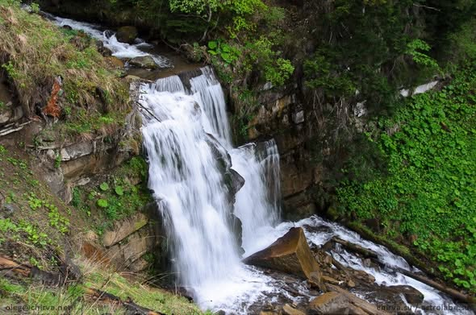

ხეობის ყველაზე ველური წერტილი
აბუხალო ძამას ხეობის ყველაზე შორეული დასახლებული პუნქტია. აქ ნახავთ 25-მეტრიან ჩანჩქერს, რომელიც კლდეზე ეშვება და კლდეში ნაკვეთ სამონასტრო კომპლექსს. ეს ადგილი იდეალურია მათთვის, ვისაც სურს ცივილიზაციისგან სრული მოწყვეტა და ნამდვილი თავგადასავალი.



⚠️ მნიშვნელოვანი გაფრთხილება
🚙 მხოლოდ 4x4
გზა არის ძალიან რთული და დაზიანებული. მისვლა შესაძლებელია მხოლოდ მომზადებული ჯიპებით.
📵 კავშირი
აბუხალოში მობილური ქსელი საერთოდ არ იჭერს. მოემზადეთ სრული "Offline" რეჟიმისთვის.
🌦️ ამინდი
წვიმის დროს გზა ხდება სახიფათო. ტური შესაძლოა გაუქმდეს უამინდობის გამო.
🍗 კვება
ხეობის ამ ნაწილში მაღაზიები არ არის. აუცილებელია საკვების ქარელიდან წაღება.